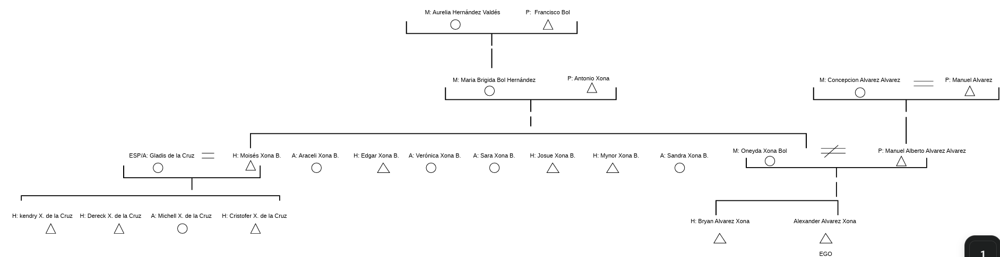
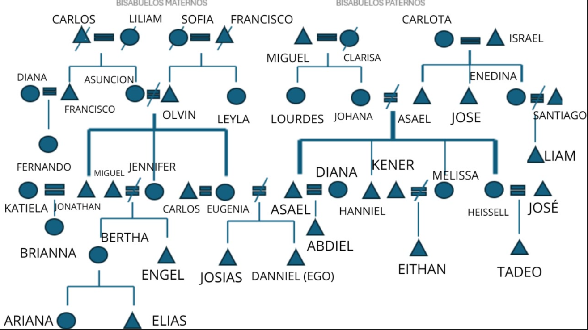
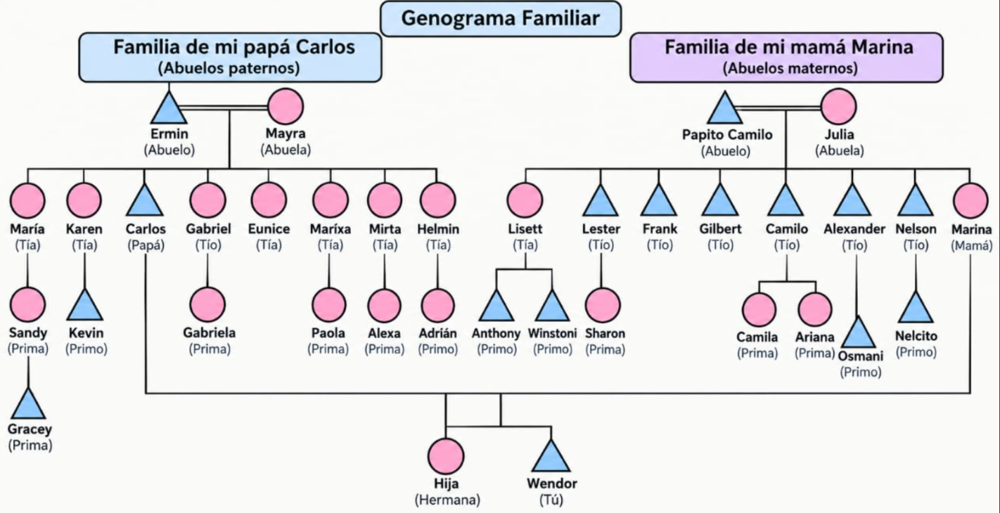
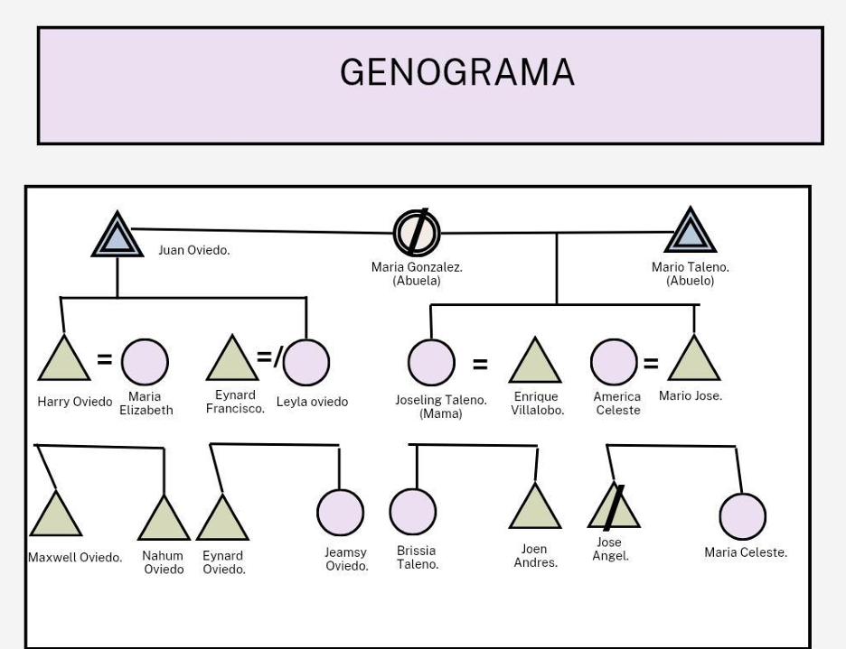

Raíces
Reconocer los lugares, las personas y los vínculos que forman nuestra historia.
De dónde venimosUNIVERSIDAD NACIONAL DE INGENIERÍA · INTERCULTURALIDAD
Cada familia guarda un universo de historias. Conocer nuestras raíces es descubrir los caminos, las costumbres y los recuerdos que nos conectan.
Las raíces nos recuerdan de dónde venimos; la memoria nos ayuda a comprender quiénes somos.
01 · Nuestra historia
Las familias conservan recuerdos, costumbres, conocimientos y experiencias que pasan de una generación a otra. Conocer nuestras raíces nos permite comprender mejor nuestra identidad y reconocer la diversidad cultural que existe entre las personas.
Este proyecto reúne genogramas e información etnográfica para explorar los vínculos familiares, los procesos migratorios, las tradiciones y las semejanzas y diferencias entre nuestras historias.
Reconocer los lugares, las personas y los vínculos que forman nuestra historia.
De dónde venimosResguardar los relatos, las experiencias y las enseñanzas que merecen continuar.
Lo que recordamosEscuchar otras experiencias y reconocer el valor de las diferencias culturales.
Lo que compartimosUna historia familiar no se compone únicamente de nombres y fechas, sino también de los recuerdos, esfuerzos y costumbres que pasan de generación en generación.
Una reflexión sobre nuestras raíces02 · Nuestro legado
Explorá cada familia para descubrir parte de su historia y de las tradiciones que forman su identidad.
❧
01 Genograma familiarRaíces y movilidad
Una historia con raíces familiares vinculadas con Guatemala y experiencias de movilidad hacia otros países.

02 Genograma familiarIdentidad y tradición
Una historia ligada a Ometepe, las ocupaciones familiares y las celebraciones que reúnen a sus generaciones.

03 Genograma familiarVínculos y costumbres
Una historia familiar vinculada con Ticuantepe y la importancia de conservar costumbres y vínculos entre generaciones.

04 Genograma familiarMigración y memoria
Una historia con recorridos entre municipios, experiencias laborales y tradiciones que fortalecen la convivencia familiar.
Cada genograma representa una historia particular. Los datos que no se han podido establecer no deben interpretarse como ausencia de vínculos o tradiciones.
03 · Caminos recorridos
La migración ocurre cuando las personas se trasladan de un lugar a otro para vivir, trabajar, estudiar o reunirse con familiares. Estos movimientos pueden transformar la vida cotidiana y crear nuevas conexiones culturales.
En las historias recopiladas aparecen recorridos dentro de Nicaragua y experiencias que conectan distintos países. Cada desplazamiento puede influir en las relaciones, las oportunidades y las costumbres familiares.
Una idea para recordar
Las historias, los recuerdos y las tradiciones pueden acompañar a las familias a lo largo de sus caminos.
El lugar donde comienzan muchas historias familiares.
Los cambios de residencia y las nuevas experiencias.
Los lazos y recuerdos que pueden mantenerse.
04 · Herencia cultural
Seleccioná una tarjeta para conocer lo que una tradición puede aportar a la memoria familiar.
❧Estos ejemplos representan categorías culturales que aparecen en las historias; no significa que todas las familias practiquen cada una de ellas.
05 · Mirar en conjunto
Lo que nos acerca
Lo que nos hace únicos
Comparar no significa decidir qué familia es mejor, sino aprender a reconocer tanto lo que compartimos como aquello que hace especial cada historia.
06 · Tu turno de pensar
Presioná cada pregunta para revelar su respuesta. También podés probar tus conocimientos en la actividad interactiva.
❧Porque nos ayuda a comprender nuestra identidad, conocer las experiencias de generaciones anteriores y valorar los recuerdos y aprendizajes que han influido en nuestra familia.
La migración puede acercar a las familias a nuevas costumbres y formas de vida. Al mismo tiempo, pueden conservar parte de sus raíces mediante sus recuerdos, su idioma, su comida y sus celebraciones.
Las tradiciones permiten compartir conocimientos, valores y recuerdos entre generaciones. También crean espacios de convivencia y ayudan a mantener viva parte de la herencia cultural.
Escuchando sin juzgar, reconociendo que existen distintas formas de vivir y celebrar, y evitando considerar una cultura superior a otra. El respeto comienza cuando estamos dispuestos a aprender de los demás.
Pequeño reto intercultural
Una persona comparte una tradición familiar diferente a la tuya. ¿Cuál es la mejor manera de responder?
07 · Tu voz también cuenta
Compartí una tradición, un recuerdo o una enseñanza importante de tu familia.
❧Tu recuerdo puede ser el primero de este pequeño muro de memoria.
08 · Fuentes de referencia
Convención para la Salvaguardia del Patrimonio Cultural Inmaterial (2003).
Abrir recurso institucional ↗Declaración Universal de la UNESCO sobre la Diversidad Cultural (2001).
Abrir recurso institucional ↗Una memoria compartida
Detrás de cada nombre hay un camino. Detrás de cada tradición, una historia. Y detrás de cada familia, una memoria que merece ser escuchada.
Volver al comienzo ↑